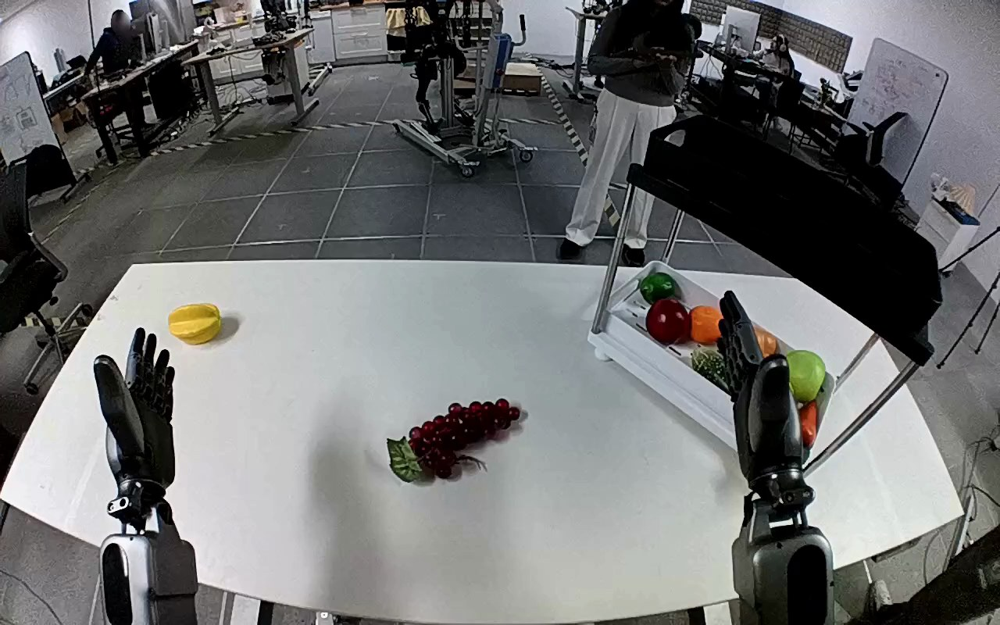

NVIDIA GR1 · 94
Video 94

Visual review action_review.json
{
"prompt_protocol": "humanoid_action_v1",
"prompt_provenance": "visually_authored_from_video_and_initial_frame",
"reviewed_contact_sheets": [
"sheet_001.jpg"
],
"inspected_frame_stride": 2,
"inspected_sampled_frame_count": 60,
"initial_scene": "Egocentric view over paired robot forearms facing a table. A purple/red grape bunch with a green leaf lies near the center, and a white plastic tray holding other fruit sits to the robot right. Both hands initially remain open above the near edge.",
"observed_sequence": [
{
"start_frame": 0,
"end_frame": 23,
"action": "Both hands remain open; the grape bunch remains on the tabletop.",
"confidence": "high"
},
{
"start_frame": 24,
"end_frame": 57,
"action": "The right arm moves inward from beside the tray toward the grape bunch, bringing its open fingers over and around it; the left hand remains open without contact.",
"confidence": "high"
},
{
"start_frame": 58,
"end_frame": 80,
"action": "The right fingers close around the grape bunch while it is still near the table, securing and slightly turning it.",
"confidence": "high"
},
{
"start_frame": 81,
"end_frame": 99,
"action": "The right hand lifts the bunch from the tabletop and carries it rightward toward the white tray.",
"confidence": "high"
},
{
"start_frame": 100,
"end_frame": 112,
"action": "The right hand moves the bunch over the tray and lowers it among the other fruit.",
"confidence": "high"
},
{
"start_frame": 113,
"end_frame": 119,
"action": "The right fingers open; the grape bunch stays within the tray among the other fruit while the open right hand remains adjacent.",
"confidence": "high"
}
],
"arm_hand_roles": {
"right": "Active hand: reaches, closes around the grape bunch, lifts, carries, lowers into the tray and opens to release it.",
"left": "Remains open above the near-left table edge and makes no object contact or supporting contribution.",
"coordination": "Single-hand manipulation; no hand-to-hand transfer, two-hand stabilization or human interaction occurs."
},
"anatomical_side_evidence": {
"viewpoint": "Egocentric forward view from the robot, with both forearms extending forward from the lower near side of the image.",
"evidence": "The active forearm enters from the lower right and its contralateral counterpart from the lower left. Their forward orientation and paired wrist/hand arrangement establish robot-relative right and left in this egocentric view, rather than a frontal image-left convention. The source right-hand annotation agrees with this visual configuration.",
"confidence": "high",
"limitation": "Shoulder attachments and torso are outside the image; naming is grounded in the egocentric bilateral arm layout and wrist/hand orientation."
},
"terminal_state": "The grape bunch rests inside the white tray among other fruit. The right hand is open beside it and remains over the tray; the left hand stays open and clear of the objects.",
"uncertainties": [
"Exact individual finger contact points are occluded by the bunch during grasp and lowering.",
"The source egocentric camera rotates during the action; the mandated fixed-camera constraint is retained exactly in the generation prompt."
],
"annotation_discrepancies": [],
"evidence_frame_indices": [
0,
54,
70,
88,
102,
112,
115,
117,
119
],
"selected_execution_status": "success",
"inspection_coverage": {
"complete_source_frame_interval": [
0,
119
],
"sampled_frames": "All 60 even-indexed frames from 0 through 118 visually inspected on sheet_001.jpg.",
"native_source_initial_png_viewed": true,
"native_transition_and_terminal_frames_viewed": [
54,
70,
88,
102,
112,
115,
117,
119
]
},
"video_id": "94",
"dataset": "NVIDIA_GR1_100",
"dedicated_review_agent": "review_gr1_94",
"review_source_video": "NVIDIA_GR1_100/94/original/original.mp4",
"source_frame_count": 120,
"source_fps": 20.0,
"native_detail_frames": [
54,
70,
88,
102,
112,
115,
117,
119
],
"world_model_prompt": "The robot uses its right hand to grasp the purple grape bunch at the center of the table and lift it. It carries the grapes to the white plastic tray on its right, lowers them among the other fruit, and opens its fingers, leaving the bunch in the tray with the hand nearby. Keep the camera fixed; preserve robot geometry, physically valid joint motion, and normal gripper opening and closing.",
"original_task_instruction": "Use the right hand to pick up purple grapes from center of table to lower white plastic tray.",
"selected_segment": {
"start_frame": 0,
"end_frame_exclusive": 120,
"reason": "Complete original single-task reference; no cropping or trimming requested."
},
"source_video_sha256": "f1cf4df6e66557ccf47b7266c995e4f495f08da29bcaf900e8c46668e2fb2d77",
"review_completed_at": "2026-10-13T18:41:15.560530+00:00"
}